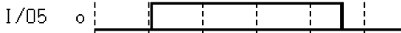

Displaying unstable state (closed box)
The Timing Diagram uses the unstable state when the data does not remain stable over a window compare.
The unstable state is shown by a closed box for individual pins (see below).
For groups of pins, if all pins in the group are unstable, an empty box is displayed. If only one or more pins in the group are unstable, then a question mark is shown instead of the hexadecimal value for the group.

Functional changes
- Introduced before SmarTest 6.3.2